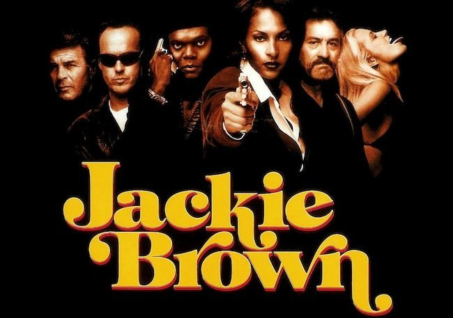

Jackie Brown (1997), es una azafata de vuelo que necesita dinero y hace de correo para Robbie, un mafioso buscado por la policía. Un día es sorprendida en la aduana y acusada de tráfico de drogas y evasión de capital. Sólo podrá evitar su ingreso en prisión, si acepta una propuesta de la policía: ayudarles a llegar hasta Robbie. Daría paso a seis años de inactividad detrás de las cámaras.
Reparto
- Pam Grier como Jackie Brown.
- Samuel L. Jackson como Ordell Robbie.
- Robert Forster como Max Cherry.
- Bridget Fonda como Melanie Ralston.
- Michael Keaton como Ray Nicolette.
- Robert De Niro como Louis Gara.
- Michael Bowen como Detective Mark Dargus.
- Chris Tucker como Beaumont Livingston.
- Y otros muchos más...